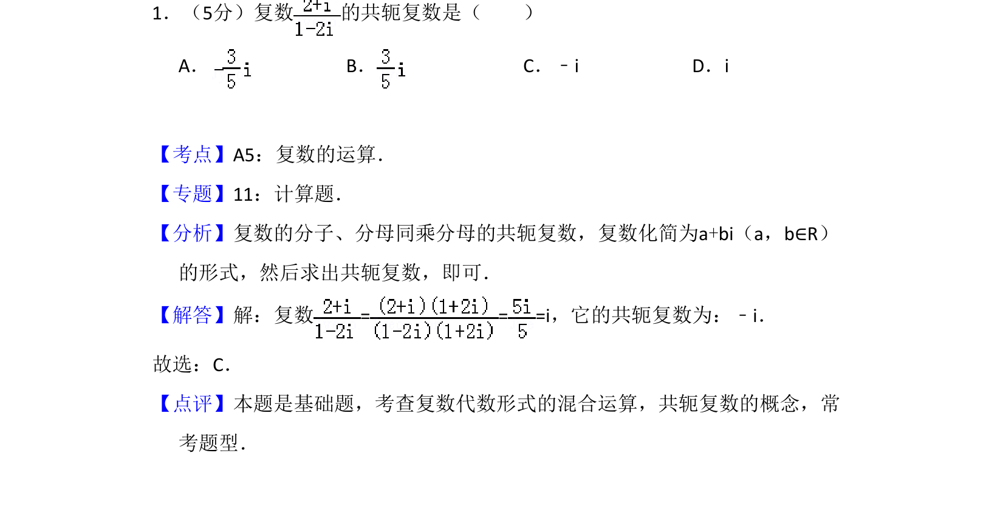
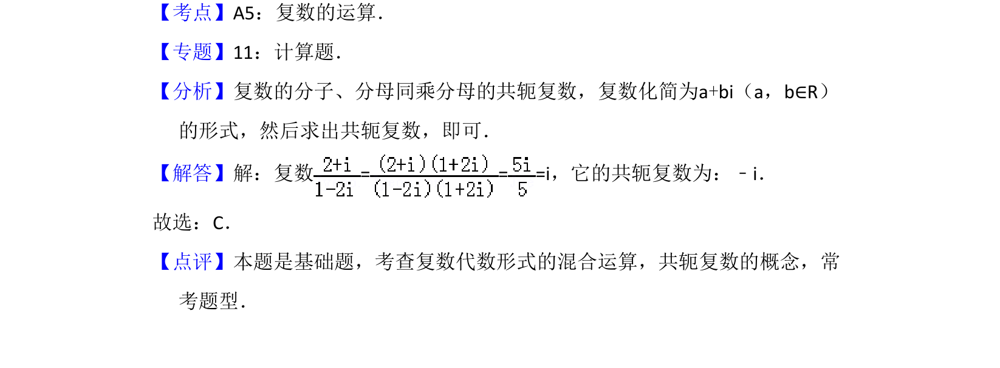

考点：复数运算 共轭复数

复数除法运算及共轭复数概念的应用

📄 原 PDF 第 1 页：
素材/真题/吉林/2008-2024·（吉林）数学高考真题/2011年高考数学试卷（理）（新课标）（解析卷）.pdf
1．（5分）复数 的共轭复数是（ ） A．B．C．﹣i D．i
【考点】A5：复数的运算．菁优网版权所有 【专题】11：计算题． 【分析】复数的分子、分母同乘分母的共轭复数，复数化简为a+bi（a，b∈R） 的形式，然后求出共轭复数，即可． 【解答】解：复数= = =i，它的共轭复数为：﹣i． 故选：C． 【点评】本题是基础题，考查复数代数形式的混合运算，共轭复数的概念，常 考题型．